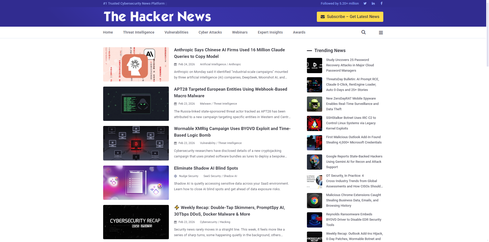

Cyber Security - Level 4 - HCFE
Welcome to my project for Level 4 Cyber Security, below is a selection of links that will take you to the relative topic of the heading.
What is Cyber Security?
Cyber Security is the prevention of cyber attacks, ensuring procedures are put in place to reduce the effects of an attack or full prevention of an attack. Whilst at it's core Cyber Security's function is to defend against potential or ongoing online threats.
It's the protection of vast amounts of data which can be public or private information either stored locally (in house/internal) or externally via the cloud.
Why is it Important?
Ensuring that the principles of Cyber Security are enforced and used effectively prevent users, businesses and governments from losing their data, access to devices,
Links
Recent Security News
Below is some security news that I've tried to keep updated when it comes to systems being breached or data sets etc. Though, the list may not be fully updated all the time I've added one of the best news sources to keep up to date with the latest below. Along with some that I personally think are worth taking note of further below.

Hacker News